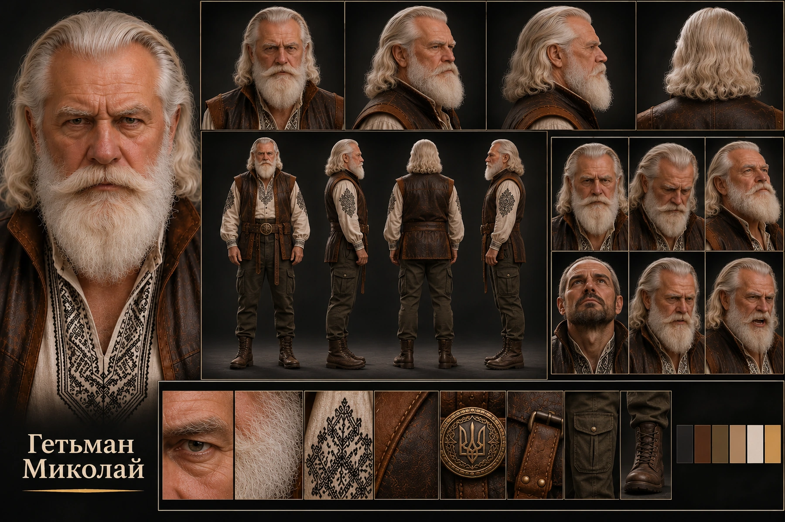

ОСНОВНА ІНФОРМАЦІЯ
Гетьман Землі-1
Миколай, якого близькі й знайомі називають дідом Миколою, — характерник і гетьман світу, який після появи Дмитра знову отримав зв’язок з іншими планами. До цього він був останнім характерником свого плану. Поява нових характерників і його обрання гетьманом стали ознаками відродження спільноти.
Ім’я: Миколай
Інше ім’я: дід Микола
Титул: гетьман
Світ: Перший план / Земля-1
Статус: характерник
Вік: у рукописах точно не зазначений
Зовнішність: літній чоловік із довгим білим волоссям і густою білою бородою; затверджений візуальний образ — у вишитій сорочці та темному шкіряному жилеті
ХАРАКТЕР І ЛІДЕРСТВО
Гостинність і твердість у рішеннях
Миколай поєднує доброзичливість господаря з авторитетом керівника. Він приймає вдома нових людей і науковців, уважно вислуховує співрозмовників, але коли йдеться про безпеку та майбутнє цивілізації, діє рішуче.
У переговорах Миколай говорить прямо, оцінює сильні сторони кожної сторони й шукає спільне рішення. Він не приховує, коли чогось іще не розуміє, але готовий брати відповідальність і пропонувати конкретний план дій.
ЗДІБНОСТІ ТА РОБОТА
Характерник і координатор
Як характерник, Миколай користується порталами та мислезв’язком. Він може відкривати переходи між планами, підтримувати груповий канал і передавати великі мислепакети. Також працює з картами світів і доповнює спільну голографічну мапу відомостями, які зберегла його спільнота.
Як гетьман, він координує відродження характерників свого плану, приймає новоініційованих на стажування, залучає науковців і бере участь у спільному плануванні оборони. Цивільний напрямок у межах узгодженого плану він доручає Дмитрові, а військову координацію ведуть відповідальні командири, зокрема Марат.
РОЛЬ У СЮЖЕТІ
Відродження спільноти та союз трьох світів
До появи Дмитра Миколай залишався останнім характерником свого світу. Разом із дружиною-провидицею він готувався до неминучого кінця цивілізації. Новий зв’язок між планами змінив цей перебіг подій: спільнота почала відроджуватися, а Миколай став гетьманом після понад століття, протягом якого посада залишалася вакантною.
Під час зустрічі із Сухумом він представляє карту, яку зберегли мандрівники його плану, і допомагає встановити зв’язки між трьома центральними світами. Згодом Миколай бере участь у переговорах із Раулем, формулює пропозицію про союз і допомагає розподілити відповідальність між керівниками трьох цивілізацій.
Важливі події
- Після появи Дмитра стає новим гетьманом свого світу; до цього посада залишалася вакантною понад сто років.
- Приймає новоініційованих характерників у своєму домі та організовує їхнє направлення на стажування й тренування.
- Під час першої зустрічі із Сухумом представляє карту відомих його спільноті планів і разом із ним уточнює зв’язки між Землею-0, Землею-1 та Землею-2.
- Приймає на своєму плані групи науковців, допомагаючи розмістити їх для роботи.
- Після переговорів із Раулем передає Дмитрові й Марату домовленості та розподіляє між ними напрямки подальшої роботи.
- Разом із Сухумом і Раулем бере участь у формуванні спільного плану дій трьох цивілізацій.
- Попереджає про небезпеку Ордену та бере участь у визначенні заходів безпеки й секретності.
Взаємини
- Ганна: дружина Миколая; у рукописах згадується як провидиця.
- Дмитро: перший новоініційований, поява якого відкрила новий зв’язок між світами; Миколай довіряє йому цивільний напрямок спільної роботи.
- Гетьман Сухум: союзник і партнер у координації трьох світів; між ними швидко виникає взаємна повага.
- Марат: партнер у військовій координації та плануванні спільних дій.
- Рауль: керівник Другого плану, з яким Миколай веде переговори про союз і спільну оборону.
Візуальний канон
Літній чоловік із довгим білим волоссям і густою білою бородою. Затверджений автором образ показує його у світлій вишитій сорочці, темному шкіряному жилеті, темних штанах і черевиках. Вік у рукописах не конкретизований.